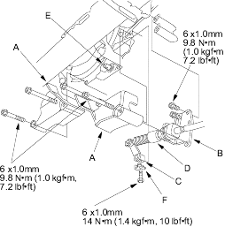
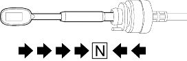
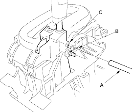

- Remove the shift cable covers (A), then remove the bolts securing the shift cable holder (B).

- Remove the lock bolt securing the control lever (C), then remove the shift cable (D) with the control lever from the control shaft (E).
- Insert the new shift cable through the grommet hole, then install the shift cable guide bracket.
- Verify that the transmission is in N.gif position on the control shaft.
- Install the control lever with the shift cable on the control shaft. Do not bend the shift cable excessively.
- Secure the shift cable holder with the bolts on the transmission.
- Install the lock bolt with a new lock washer (F), then bend the lock washer tab against the bolt head.
- Install the shift cable covers.
- Turn the ignition switch ON (II) and verify that the
 position indicator light comes on.
position indicator light comes on.
- If necessary, push the shift cable until it stops, then release it. Pull the shift cable back 2 steps so that the shift position is in .

- Turn the ignition switch OFF.
- Insert a 6.0 mm (0.24 in.) pin (A) through the positioning hole (B) on the shift lever bracket base and into the positioning hole (C) on the shift lever assembly.
